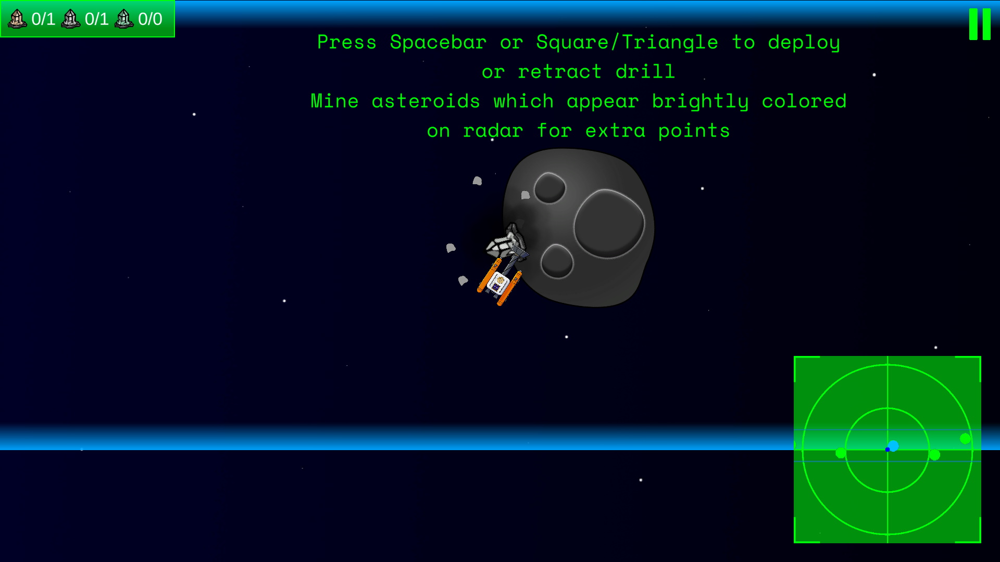
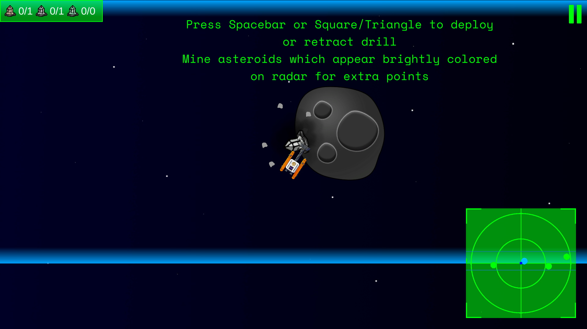

Drift is a multiplayer survival crafting game where players explore, collect resources, and build custom ships and bases.
I joined the Drift team in April 2025 as a Level Designer, with the goal of producing handcrafted regions for players to explore in the space explolration update of the game.
 



Creating New Levels
The space exploration update of the game will see players, having constructed a fully functional ship, warping to new regions to escape the encroaching black hole.
These regions usually take the form of new asteroid fields, with a large central asteroid containing an explorable cave system.
The process of creating a new region starts with choosing a few of the gameplay and visual variations we came up with, and combining them. For instance, an ice-covered asteroid that uses
the acid cloud and diggable dirt mechanics, or an asteroid which is overgrown and has vines that need to be cleared to progress.
Then, using Godot's CSG tools, I block out the interior layout of the cave. I make sure that each chamber has a unique and recognizable shape, both to add navigational variety and to
ensure the player recognizes where they are in case they get turned around.
Next, I add in gameplay elements such as environmental hazards and resource deposits / loot chests. Hazards provide increased navigational challenges, and rewards incentivize the player
to explore the caves thoroughly.
Finally, I do an environment pass using premade rock formation and flora assets to give everything the feel of a real cave. Several of the flora give off light, so I am also carefully
considering the lighting during this phase.
Scripting
Occasionally a region will require some bespoke scripting. The region pictured here is an abandoned-but-still-functional raceway, which, when completed, gives the player access to
a chest full of rare resources. To realize this, I developed a Race Manager script which made use of some existing (previously unused) racing gates.
This manager keeps track of the order
the gates should be crossed in, making sure the player passes through all the gates and does not activate any out of order. It also controls the color of the gates to provide a visual
indicator to the player of which gate is next in the sequence, and keeps track of the amount of time the player takes to complete the race.